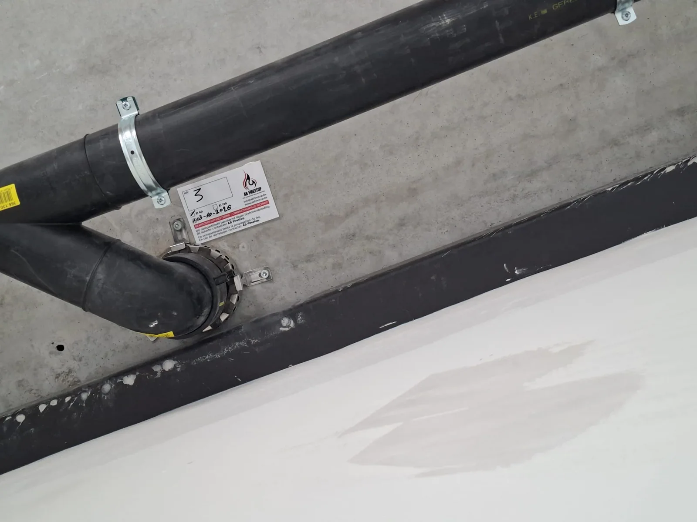

Structure & substrate
The wall, floor, junction or structure concerned.
Expertise / 04
Flexible in movement. Reliable in protection.

Movement joints and junctions between building elements must retain their fire resistance. We install solutions that accommodate movement and the required fire resistance.
Technically coordinated
Proper installation helps prevent cracks and smoke leakage while preserving the flexibility of the joint.
Installation in practice
Getting off to a good start
A suitable solution starts with a clear understanding of the situation. Photos, plans and known project requirements help with technical coordination.
Discuss your applicationThe wall, floor, junction or structure concerned.
Existing services, openings and relevant junction details.
The required fire resistance, system solution and coordination with other contractors.
The documentation and technical advice relevant to your application.
Your project, properly protected